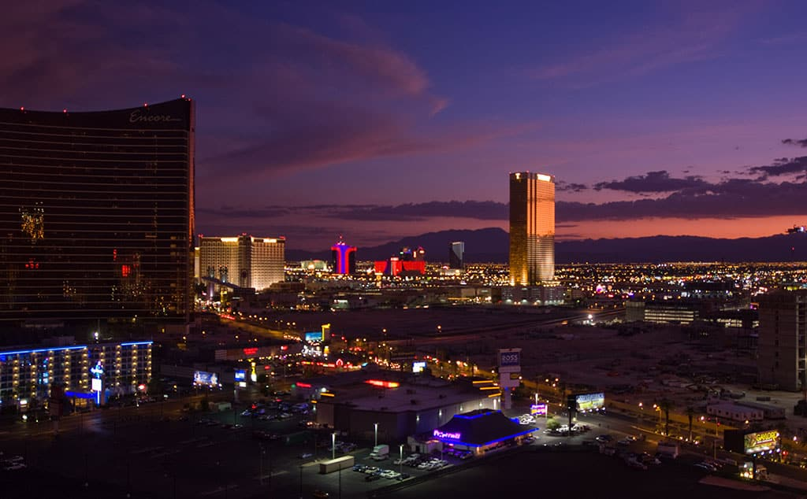
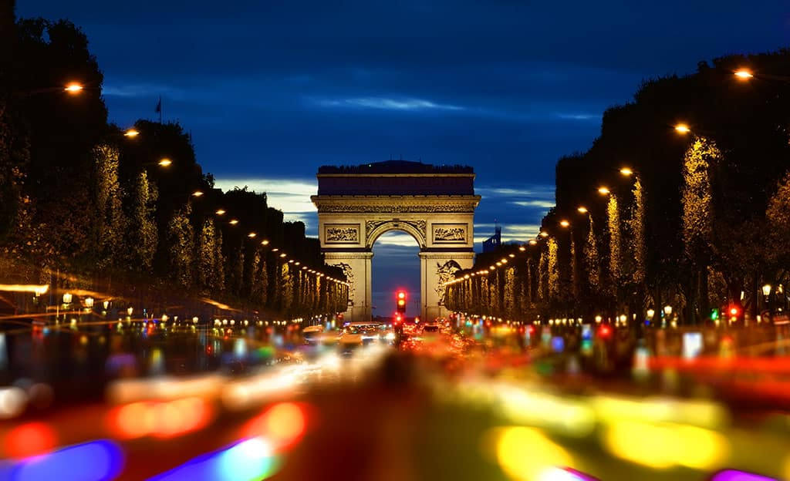
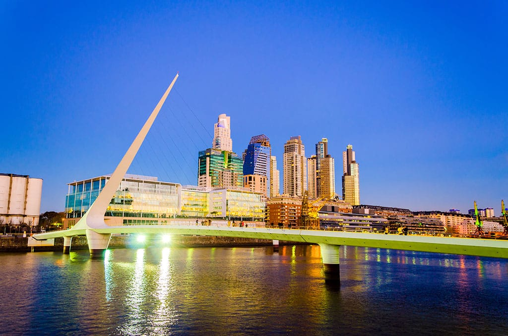
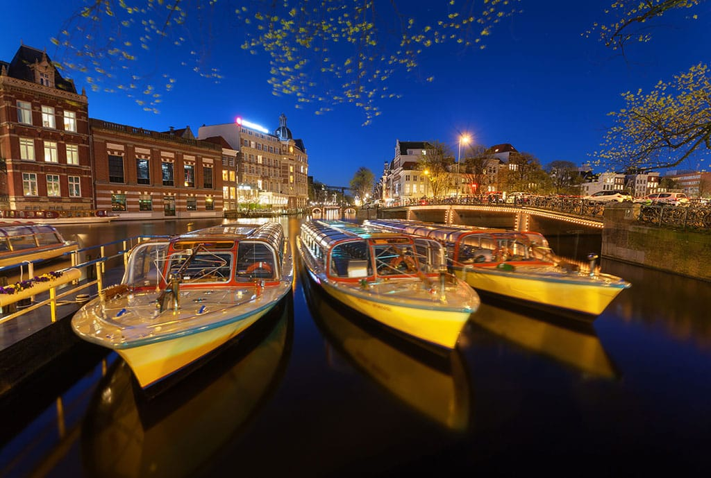
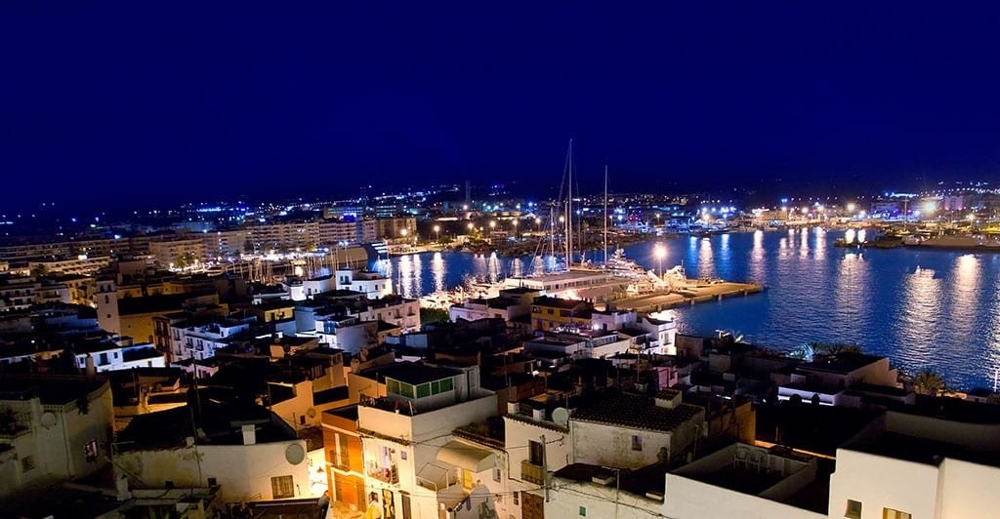
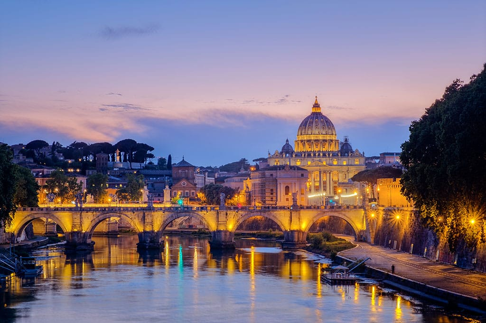

Best nightlife destinations in the world
Las Vegas, the United States
Paris, France
Buenos Aires, Argentina
Amsterdam, Netherlands
Ibiza, Balearic Islands, Spain
Rome, Italy
The clubs here are with complete lively buzz even during the early mornings and visit the bustling casinos, and the swankier Vesper Bar in Cosmopolitan hotel is a must visit the place. However, for uplifting energy, head off to Pure which gives spectacular views of the city from the terrace.
The city of fashion is high on nightlife since ages and for good reasons. One cannot afford to miss Moulin Rouge for its glamorous cabaret performances. An elite club called Club Silencio is another must visit place here. However, this club is members only so count on your luck!
While the entire world is going into a slumber during the late night, the party zombies in here wake up with all the energy on the planet. The party just begins in the late night with pulsating music, thrilling cocktails which go till dawn. The bars here have a great blend of good musicians, dancers, and singers. Rojo Tango offers cabaret performances but if you are the classy kind, head out to the Jazz bar Notorious.
For all the movie buffs, there is the place named The Movies which is themed in the 1920s era. For live gigs, Paradiso is a great place to visit. But for more woodiness and local flavors, Zeedij is the right place to be. Some other night haunts include Wynand Fockink, Wolevenstraat, and Leidseplein.
When Vengaboys wrote the song “We’re Going to Ibiza” it was not just for the trend. This party destination is frequently referred to as clubbing capital of the world and hit the best clubs namely Pacha, Amnesia, El Divino which tops the charts. For all the underground trance lovers, Ibiza is the perfect place to be. Pay a visit to hippie markets for some fun, and Café Pereira is an ideal stop for jazz lovers.
Gregory in a perfect jazz bar which suits the character of this timeless city. Indulge in delectable Italian food during the stay here and for a true Roman experience, pay a visit to wine bar II Piccolo near Piazza Navona. For all those souls who love laid back nightlife, Rome is the ideal place to visit.
